手把手教你打造一个汽车检测器！
本文将带你打造一个汽车检测器，使用的算法是PyTorch版本的YOLOV3。本文不会讲解该算法的细节，而是专注于如何去实现自己的汽车检测器，主要包括数据下载，数据清洗，数据集制作以及训练和检测（图片检测，视频检测）等过程。即使你不知道YOLOV3是什么也没关系，这对于阅读本文几乎毫无影响。
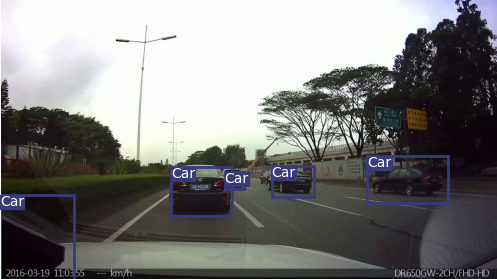
数据集下载
为了检测汽车，首先需要获取含有汽车的标注好的数据集，这里我选择了KITTI。由于官网下载太慢，推荐使用下面的百度云链接进行下载。
下载KITTI数据集：
https://pan.baidu.com/s/1t3TXXkqVR4NGqZwQiGEIzg
提取码：cw35
源码来自Github开源项目https://github.com/eriklindernoren/PyTorch-YOLOv3，为了适应本文的内容，我将其做了些许更改，一并上传到了百度云，在公众号后台回复"detect"直达下载地址。
数据清洗
在主目录PyTorch-YOLOv3-master下新建文件夹datasets，在datasets中新建四个文件夹：train_image,train_label,proceed_train_image_path,proceed_train_label_path
将下载好的图片数据(.png)全部移动到train_image，标签数据(.txt)全部移动到train_label.
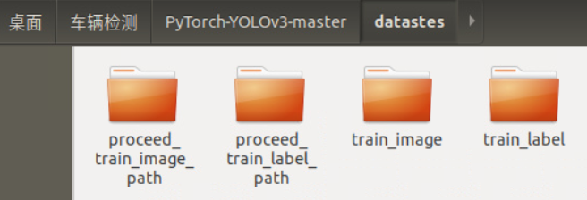
本部分的数据清洗主要针对以下问题：
由于不可知的原因，下载下来的数据中，有些图片是损坏的，不能够被加入训练集
原始kitti数据集的标注标签中，除了模型必须的信息（1个目标所属类别+4个位置坐标）外，还包含其余信息，我们需要过滤掉这些信息；
同时，我们只需要检测Car，因此需要将其余类别（非Car）的信息也过滤掉。
在kitti数据集中，坐标格式为：
<left top right bottom>
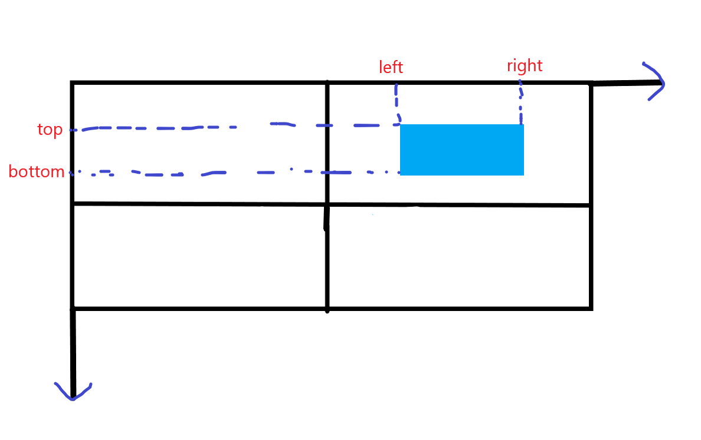
而本次使用的YOLOV3模型要求的格式为：<x_center y_center width height>
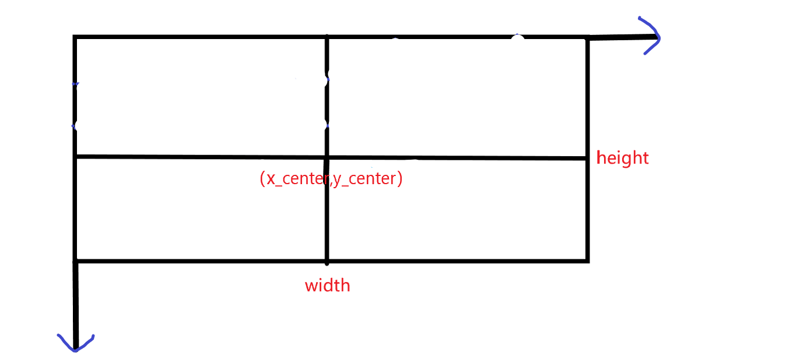
因此需要做一个转换，转换公式为：
$$width=right-left$$
$$height=bottom-top$$
$$x_{center}=left+width/2$$
$$y_{center}=top+height/2$$
- 根据模型的要求，坐标需要做归一化处理：
$$width <— width/w$$
$$height <— height/h$$
$$x_{center} <— x_{center}/w$$
$$y_{center} <— y_{center}/h$$
其中，$w$和$h$分别代表训练集图片的宽度和高度。
实现上述要求的代码如下：
1 | import os |
在datasets文件夹下打开jupyter notebook，新建文件，写入上述代码并运行，就完成了数据清洗。
清洗后的图片数据(.png)存放在proceed_train_image_path，与之对应的标签数据(.txt)存放在proceed_train_label_path。
其中，图片数据就是一张张的图片，而标签数据是一个个的文本文档，并且每一张图片对应一个这样的文本文档：
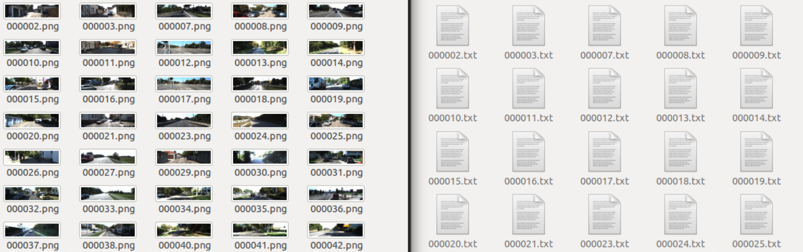
文本文档的内容是一行一行的数据，每一行都代表该文本文档对应的图片中被标注的一个目标（在这里的目标就是车, Car），图片中有几辆车被标注出来，该文本文档就有多少行。
每一行包含5个信息，第一个是目标所属类别，这里由于只检测车(Car)，也就是只有1类，因此都是0(根据模型的要求，0代表Car，我们只需在data/custom/classes.names中的第一行写入Car即可)，后面四个分别代表了处理后(坐标转换+归一化)的边界框的坐标：
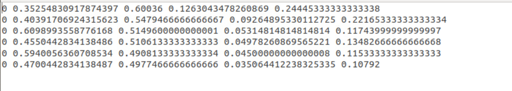
制作数据集
将上一步得到的图片数据(.png)和标签数据(.txt)分别移动到data/custom/images和data/custom/labels，若没有这两个文件夹则需先手动创建。
现在开始制作数据集。主要是制作训练集和验证集对应的.txt文件:
在主目录PyTorch-YOLOv3-master下，打开jupyter notebook，新建文件，写入以下代码：
1 | import os |
从上述代码可以看出，选取了前100张作为验证集，其余作为训练集。
现在，data/custom路径下的所有文件(夹)结构如下：
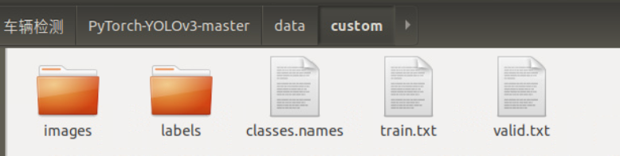
开始训练
在训练之前，先将作者提供的预训练好的darknet53权重下载下来，具体地，在weights文件夹中，执行如下命令：
1 | sh download_weights.sh |
它还会额外下载另外两个权重：yolov3.weights和yolov3-tiny.weights，这些其实是用不到的，可以忽略。
然后进入config文件夹下，执行如下命令：
1 | sh create_model.sh 1 |
这是在制作yolov3网络的配置文件，其中的1代表总共有几类，由于这里只检测车(Car)，所以只有1类。
完成以上操作后，如果显存足够大，就可以开始训练了，在主目录PyTorch-YOLOv3-master下打开终端，执行以下命令：
1 | python train.py --model config/yolov3-custom.cfg --data config/custom.data --pretrained_weights weights/darknet53.conv.74 |
如果显存较小，可能会报CUDA内存溢出的错误，可以手动调小batch_size。我是在GTX1070上进行训练的，就报了这个错误，想调一下batch_size，却发现它不是直接给出的一个超参数，而是计算得到的，打印了一下，发现当前的batch_size为16：
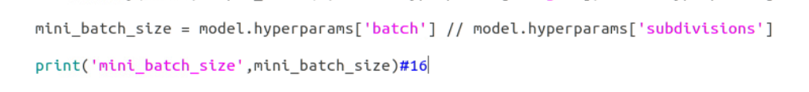
我采取了一个简单粗暴的方法，就是直接手动将mini_batch_size设置为4：
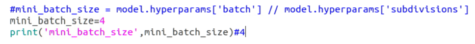
现在，再次执行上面的命令，就开始了了漫长的训练过程
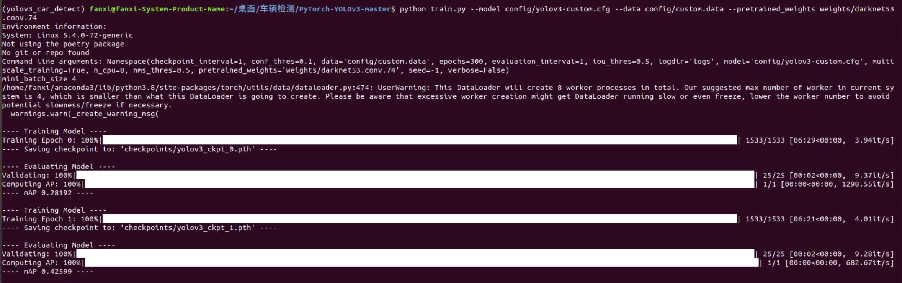
开始检测
训练完成后，就可以使用该模型对自己的数据进行检测了。
将待检测的图片数据放在data/samples，注意先清空这个文件夹下的其他图片：
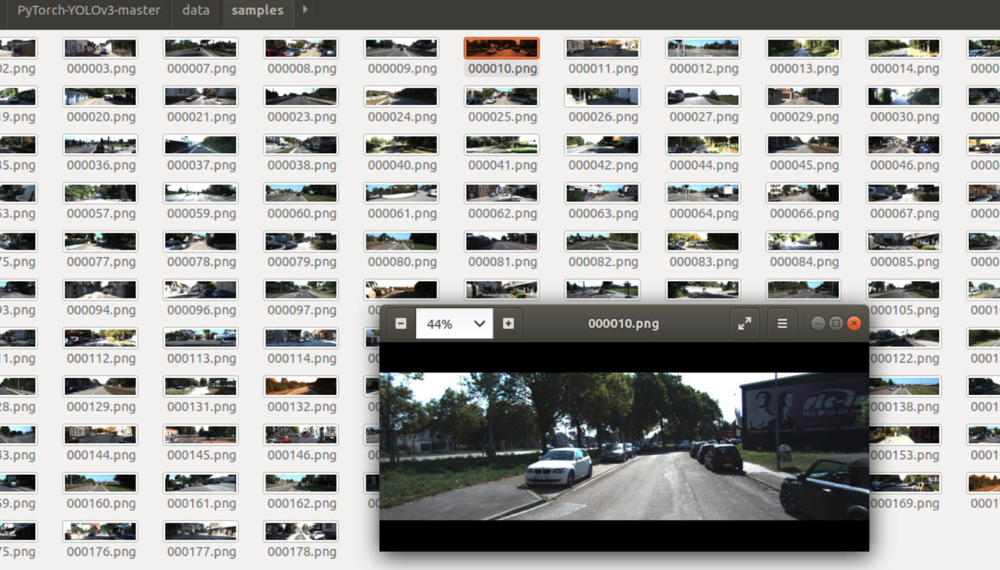
然后，打开detect.py，修改其中run函数的部分代码：
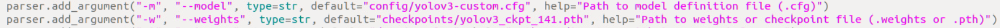
weights中的141代表这是第141个epoch得到的权重，你可以自行选择效果较好的epoch对应的权重文件，只需将141替换为你的epoch即可。
现在，在主目录PyTorch-YOLOv3-master下，打开终端，输入如下命令：
1 | python detect.py --images data/samples/ |
检测过程输出如下：
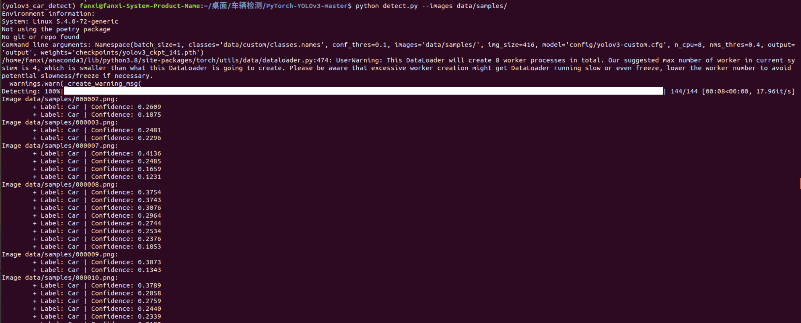
检测完成后，在output文件夹中，就能看到检测后的结果，每一个被检测出来的Car都被框起来了：
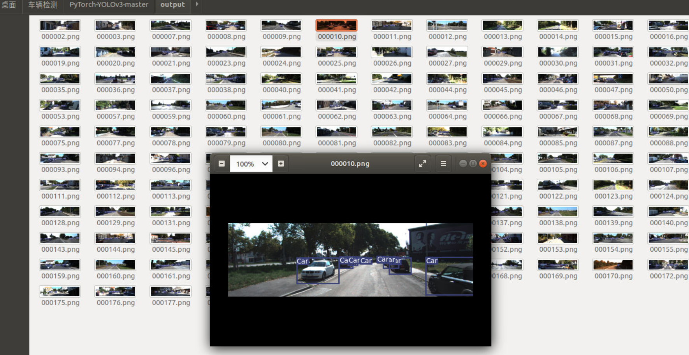
如果你已经完成了训练，但是在检测过程中没有得到上述输出，在output文件夹中的图片中的Car也没有被框起来，可以打开detect.py，将conf_thres调小一些，比如我调成了0.1：
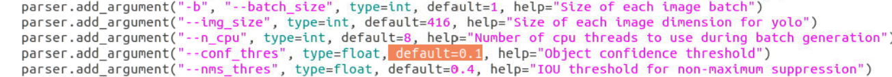
之后保存该文件，再次执行检测的命令就可以了。
视频检测
将视频切分成帧，每一帧都是一张图片，将全部的帧送入检测器进行检测，再将检测后的图片合成回视频，就完成了对视频的目标检测。
在主目录PyTorch-YOLOv3-master下，新建文件夹process_video和image，将待检测的视频放到process_video文件夹中，并在process_video中新建脚本，写入如下的视频切分代码：
1 | import cv2 |
运行上述代码，就完成了视频的切分，切分后的图片存放在新建的image文件夹中。
执行如下检测命令：
1 | python detect.py --images process_video/image |
检测后的图片被保存在output文件夹中，同样注意检测前先清空该文件夹，便于接下来的视频合成。
检测出来的部分结果展示如下：
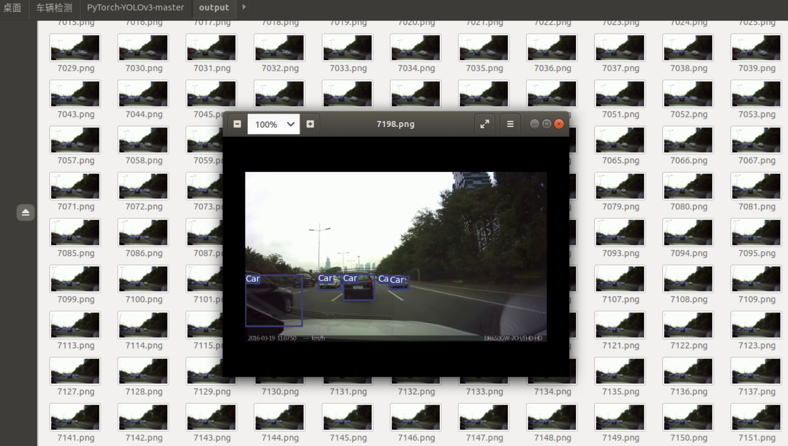
现在，在主目录PyTorch-YOLOv3-master下，新建脚本，键入如下代码，即可将图片合成为视频：
1 | import cv2 |
输出的视频文件out.avi保存在主目录PyTorch-YOLOv3-master下。